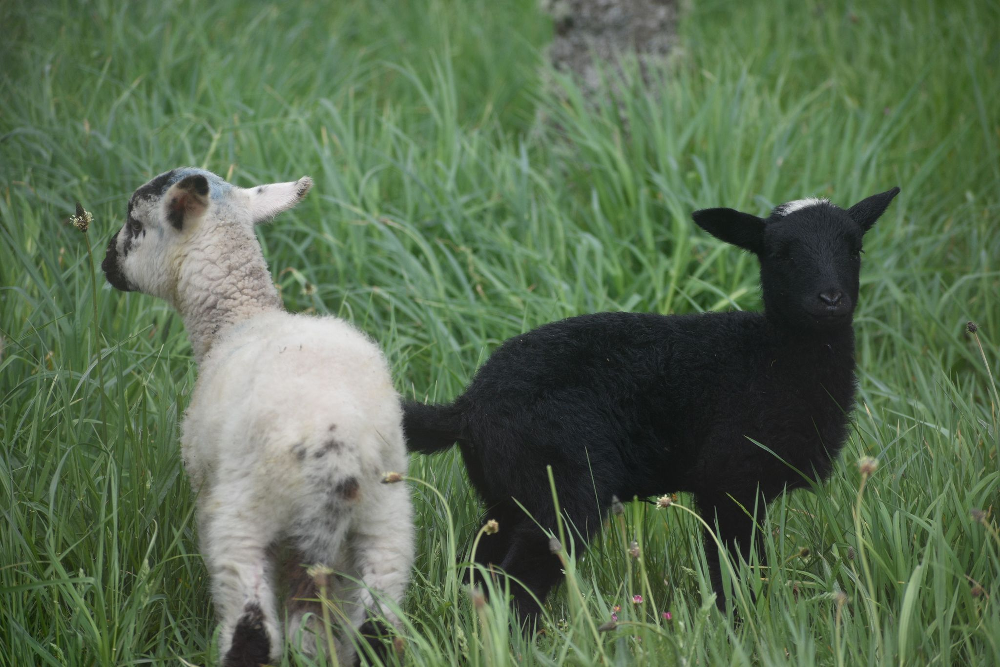

OBJETIVO 01
Objetivo 1: Rescate 300 ovejas
En nuestro pueblo, hay un ganadero con unas 300 ovejas. Se dedica a embarazarlas y a vender los corderitos. Dentro de unos 5 años planea jubilarse, por lo que es probable que acabe vendiendo todas las ovejas para que sigan siendo explotadas o matadas para alimento.
Aquí vemos una oportunidad. Queremos comprarle todas las ovejas y las naves donde las guarda. Con las 35 hectareas, tenemos terreno de sobra para pasearlas todos los dias y que se alimenten de la propia tierra.
Tenemos 5 años para lograrlo. No se como lo haremos, pero estoy seguro de que lo conseguiremos. Hace un año no sabiamos como comprariamos esta casa y estos terrenos.. y ya llevamos varios meses viviendo y soñando aquí.